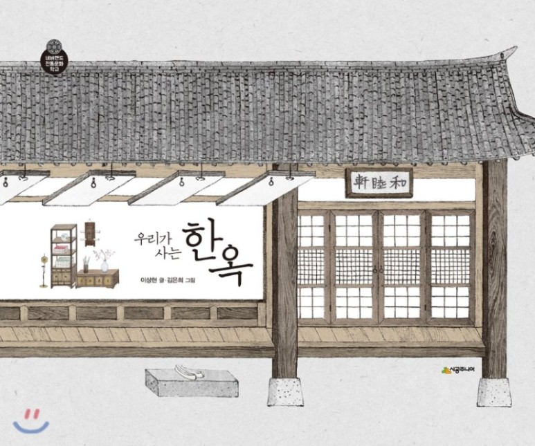

출간 서적
최초의 한옥학개론서 '즐거운 한옥읽기 즐거운 한옥짓기' 출간
2007년 출간된 '즐거운 한옥읽기 즐거운 한옥짓기'는 한옥을 독립된 학문으로 접근한 최초의 한옥학 개론서입니다. 한옥의 모든 것을 담아냈습니다. 첫째로 역사 문화 미학 등 한옥의 인문적 가치를 담아냈습니다. 둘째로 장부의 원리 등 건축이론을 수록하고, 마지막으로 실제 집을 짓는 실무를 실었습니다. 이 책을 통하여 한옥짓는 여러 비법이 세상에 처음으로 공개되었습니다. 이후 많은 실무 책이 나오는 전환점이 되었습니다.
이 책은 수공예품이던 한옥이 과거의 한계를 넘어서 공장에서 생산되어 현장에서 조립되는 생산방식으로 바뀌는 전환점을 만들었습니다. 따라서 한옥산업사에서도 매우 중요한 자리를 차지합니다.
간행물윤리위원회의 서평문화에서 서평추천을 받았고, 딱딱한 실무가 포함된 책임에도 불구하고 그 가치를 인정받아 '여름 휴가철에 읽을 책'으로 국립중앙도서관의 추천을 받았습니다. 기타 많은 단체의 추천이 있었습니다.
최초의 한옥 문화서, '한옥과 함께하는 세상여행' 출간
2011년에 출간된 '한옥과 함께하는 세상여행'은 한옥을 오로지 건물로만 연구하는, 우리의 연구 풍토에 새로운 지평을 열었습니다. 한옥은 단순한 건물일 수 없으며, 다양한 문화가 살아 숨쉬는 인문학적 가치의 보고임을 보여주고 있습니다. 한옥이 우리 문화와 얼마나 밀접하게 관계를 맺고 있는지 다양한 각도에서 서술한 책입니다.
'선데이 서울'과 경쟁할 수 있을 만큼 재미있는 글을 쓰겠다고 마음 먹고 쓴 글이어서 쉽고 재미있습니다. 크기도 한손에 들어갈 만한 크기여서 대중교통을 이용할 때, 기타 짜투리 시간을 이용하여 읽기에 적합합니다. 에피소드도 많이 담아서 누구든지 흥미진진하게 읽을 수 있습니다.
크기는 작지만 내용은 동서고금의 이야기를 두루 담고 있습니다.
2011년 한국출판문화산업진흥원에서 '그 달에 읽을 만한 책'으로 선정되었고, 같은 해 말에 문화관광부에서 '우수도서'로 선정되었습니다. 같은 해에 이렇게 두 번 상을 받는 경우는 매우 드문 경우입니다. 그만큼 책의 가치를 높이 산 것이지요. 재미와 가치 두 마리 토끼를 다 잡았다는 평가입니다.
본격 한옥 기행서, '이야기를 따라가는 한옥여행' 출간
2011년에 출간된 '이야기를 따라가는 한옥여행'은 2년간의 한옥 기행을 모은 수필집입니다. 서울, 경기, 강원, 제주, 충남, 충북, 경남, 경북, 전남, 전북 등 전국을 고르게 대표하는 살림집 17채와 기타 전통건축 7채를 답사하고 감상한 글입니다. 넉넉하게 1박 2일 여행을 하고 싶은 분에게는 그에 맞는 정보를 함께 수록했습니다.
17채의 한옥을 다 다른 관점에서 읽어냈습니다. 전통한옥은 다 같다고 하는 분이 계시지만, 이 책을 보시면 전통한옥은 다 다르다는 데에 동의하시리라 믿습니다. 이전에는 없던 다채로운 한옥 해석을 통하여 한옥을 보는 가치를 풍성하게 했습니다. 살림집이 아닌 7채는 서원 향교 교회 사찰 재사 동헌 궁집으로 전통건축의 종류를 망라했습니다. 이 책을 완독하신 분이라면, 이제 어떤 전통건축을 만나도 낯설거나 놀라지 않고 자기 눈으로 감상하실 수 있을 것입니다.
기행문이라는 가벼운 글쓰기 형식을 채택하고 있지만, 모든 전통건축을 살림집 한옥이라는 관점에서 해석하고 있어서, 한옥 연구 역사에서도 특별한 가치가 있습니다.
2016 파리 국제도서전 출품작으로 선정되었고, KBS 1FM ‘책 읽는 밤’ 소개되었습니다.
우리미학의 신기원 '인문학, 한옥에 살다' 출간
2013년 11월 출간된 '인문학, 한옥에 살다'는 한국미학 책입니다. 한국의 미학하면, 대개 야나기 무네요시에서 시작해서 최순우 선생까지 이어지는 다분히 야나기 무네요시의 개인적 의견에 뿌리를 둔 미학을 떠올리는 분이 많으실 겁니다.
이 책은 한옥의 아름다움을 추적하여 우리 예술의 뿌리를 찾아낸 책입니다. 한옥의 예술성이 어디에서 나오는지, 이 한옥의 예술성이 다른 예술과 어떻게 이어지는지에 대해 적고 있습니다.
우리미학에 관한 책이지만, 우리시대의 보편 미학인 서양미학이라는 툴로 설명하고 있습니다. 전통한옥을 고리타분한 건축으로 아시는 분이라면, 이 책을 통해서 한옥이 얼마나 현대적인 미를 장착하고 있는지 아시게 될 것입니다.
우리 미학을 서양미학으로 해석하고, 이를 통해 세계 미학사에서 우리 전통예술이 자리매김할 수 있는 이론적 근거를 마련했습니다.
문화관광부 우수도서(세종도서)에 선정되었습니다.
'다음'에서 추천했습니다. KBS 1FM ‘책 읽는 밤’ 메인 소개되었습니다.
현대미학에 새로운 대안을, '깨져라 미학 유쾌하라 예술' 출간
2015년 출간된 '깨져라 미학 유쾌하라 예술'은 미학에 처음 입문하는 이들을 위한 미학 입문서입니다. 기존의 미학 책이 오로지 유럽 사람의 관점에서 쓰인 글이어서, 문화가 다른 우리가 이해하기 쉽지 않았습니다.
이 책은 우리의 문화적 바탕에서 이야기를 시작합니다. 즉 서양사람의 관점에서 서양사람의 이야기를 번역한 것이 아니라, 한국인이 한국인의 정서를 통해 서양미학을 설명합니다. 따라서 서양미학에 접근하고 이해하기가 용이합니다. 서양미학 공부에 실패했던 분이라면 꼭 읽어보시기 바랍니다. 서양미학이 한눈에 들어옵니다.
현대에 와서 예술의 외연이 급격하게 확장되면서, 새롭게 등장한 예술을 설명할 툴이 절대적으로 부족한 상태입니다. 그래서 다양한 현대철학자의 이론이 예술작품 해설에 활용되고 있습니다. 그러면서 일반인의 입장에서 예술은 점점 이해할 수 없는 영역이 되어가고 있습니다. 이 책은 서양의 고전미학을 통해 현대예술을 이해할 수 있는 툴을 제공합니다. 아 서양미학이 이렇게도 쉬울 수 있구나! 감탄하실 겁니다.
이 책을 통해서 서양미학으로 재구성된 한국미학을 보실 수 있습니다. 아울러 우리미학이 어려움에 빠진 현대예술에 일정한 답을 제시할 수 있다는 점에서 현대미학 전체에 던지는 의미가 작지 않습니다.
* 2020년 6월 30일, 노인들을 위한 큰 글씨 책으로도 출간되었습니다.
디자인으로 세상을 인식하다, '디자인의 새로운 상상, 한옥' 출간
2016년 출간된 '디자인의 새로운 상상, 한옥'은 한옥을 디자인이라는 관점에서 읽어낸 책입니다. 한옥을 예술이라는 관점에서는 많이 다루지만, 디자인이라는 관점에서 다루는 경우는 흔치 않습니다. 전통한옥이 오늘날 디자인에게 주는 메시지는 어떤 것이 있는지도 확인해 볼 수 있습니다.
디자인으로 세상을 인식하는 방법은 없을까? 있습니다. 과거에는 없었겠지만, 이 책은 디자인을 통해 세상을 보는 새로운 인식의 툴을 제공합니다. 어떤 영역이 학문이 되기 위해서는 그 학문의 눈으로 세계를 볼 수 있어야 합니다. 즉 디자인이 학문으로 자립하려면 디자인이라는 관점에서 세상을 보고 말할 수 있어야 합니다. 이 책은 그 관점을 만들어 제시합니다.
디자인은 인간만 하는 것인지, 디자인은 언제 시작되었는지, 디자인과 예술은 어떻게 시작해서 어떻게 만나고 헤어지는지에 대해 이야기합니다. 특히 한국예술과 디자인의 관계에 대한 관점이 탁월하다고 합니다. 그리고 현대사회에 와서 디자인이 어떻게 우리 문화에 강력한 영향을 주는지도 설명합니다.
한국인의 뿌리를 찾아 떠난 여행, '그래서 한국인' 출간
사람이 집을 지으면 집은 사람을 짓는다고 합니다. 한국인이 한국인인 이유는 아마도 한옥에 살아서인지 모르겠습니다. 실제 한국인의 심리와 행태는 다른 나라 사람들의 그것들과 다릅니다. 그 원인을 캐들어간 책입니다. 이 책은 한옥에 관심없는 한국인도 흥미를 갖는 한국인의 심리에 대한 책이라는 점에서 가장 대중적인 책입니다.
한국인은 추운 지역에 살면서도 더운 지역에 사는 사람처럼 살고 있습니다. 추운 지역에 사는 사람들은 입식생활을 하고 더운 지역에 사는 사람은 좌식생활을 합니다. 그런데 특이하게도 한국인은 추운 지역에 살면서도 좌식생활을 합니다. 추운 유럽에 살면서 더운 아프리카 사람처럼 사는 것이지요. 이런 생활문화가 한국인을 아주 특별하게 만들었습니다.
한국인의 심리와 독특한 행태에 대한 책이 여럿 출간되었지만, 현상을 설명하는 데에 치중하고 있습니다. 이 책은 한국인의 독특한 심리와 행태가 생긴 원인을 주거문화를 통해 규명합니다. 한국인의 '빨리빨리 문화'를 다양하게 설명하지만, 속시원하게 그 이유를 듣지 못했다면 지금 당장 보시기 바랍니다.
청소년을 위한 책, '우리가 사는 한옥' 출간

청소년을 위한 책입니다.
어린 학생들을 위한 책이지만, 한옥에 관한 일반적인 지식을 알기에는 부족함이 없습니다. 그래서 두꺼운 책보다 그림이 많은 책을 선호하시는 분이라면, 어른을 위한 책이기도 합니다.
2018 어린이독서연구회 추천도서
전국학교도서관사서협회 추천도서